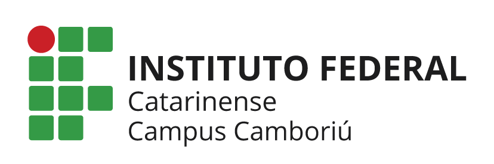

Interesse no curso
Preencha o formulário abaixo para demonstrar interesse no curso.

O Curso Técnico em Informática tem como enfoque principal as disciplinas voltadas para o desenvolvimento de programas para computadores.
O Técnico em Informática atua em atividades administrativas, de apoio técnico e de prestação de serviços de informática. Também oferece suporte ao usuário na escolha de hardwares e softwares que melhor se adaptem às suas necessidades.
O curso inclui ainda a instalação e utilização de sistemas operacionais, manutenção de hardware e desenvolvimento de projetos de redes de computadores.
| Dia | Disciplina | Horário |
|---|---|---|
| Segunda | Programação II | 08:20 - 12:00 |
| Segunda | PPO II | 13:30 - 17:10 |
| Quarta | Tópicos Especiais em Desenvolvimento (Optativa) | 15:30 - 17:10 |
Preencha o formulário abaixo para demonstrar interesse no curso.